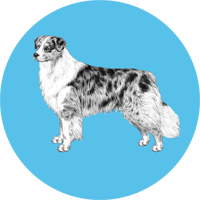
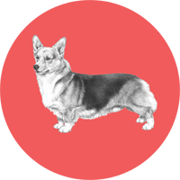

Inherited Traits
|

Image © EmbarkDNA. |
High Anxiety:Arya is a goal oriented pup, requiring constant mental and physical stimulation. She gets bored easily and takes it upon herself to guard the house day in and day out. This includes barking at people, mail trucks, cats, bikes, and much much more. These traits come from her Border Collie and Australian Shepard ancestry. Both of these breeds were born to be working dogs. Unfortunately, Arya's forever home is in a cul-de-sac. Her family refuses to relocate to a country house with land and livestock. |
|

Image © EmbarkDNA. |
Goregous Physique:Arya has a goregous physique. She's got wide hips, long legs, a stunning tri-color coat, and a little nub in place of a tail. Arya's shape comes from her Australian Shepard background. Aussies are built for strength with wide hips; it's just the way they roll. Her tri-color coat and cropped tail come from her Corgi lineage. While Aussies also have multi-color coats, Arya's specific coloring closely resembles her Corgi ancestry. |
|
Image © EmbarkDNA. |
Grand Athlete:Arya is a very fast runner and swimmer. She's not a great retriever. When playing fetch, Arya usually runs after a ball, picks it up, and immediately drops it. We all have our flaws. However, Arya's grand athletic abilities come from her Border Collie ancestory. They are known for exceling in sports thanks to their agility, tracking, and obedience. While Arya may not be very obedient, she's still a talented athlete. |